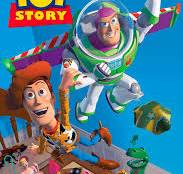
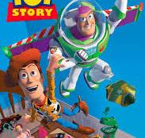

Cómo escribir una reseña que conecte
Escribir una reseña no es solo contar si algo nos gustó o no. Es compartir una experiencia de forma que otros puedan sentirse identificados, intrigados o incluso desafiados a pensar distinto.
Una buena reseña va más allá de los gustos personales. Empieza por situar al lector: ¿qué tipo de obra es?, ¿a qué público va dirigida?, ¿por qué te llamó la atención? Luego, se construye una opinión con argumentos, no solo con frases como “me encantó” o “fue aburrido”. Explicar el por qué es lo que marca la diferencia. Evitar spoilers es una regla de oro. No arruines giros ni revelaciones clave, pero sí puedes hablar de cómo te hicieron sentir o qué impacto tuvieron. El objetivo no es contar la historia, sino contar cómo viviste esa historia.